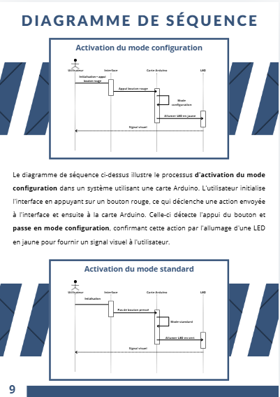
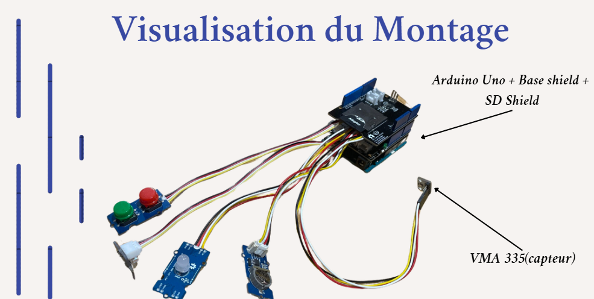
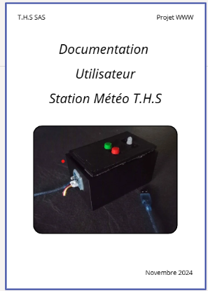
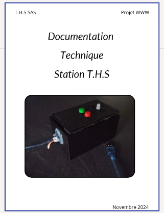

Arduino Uno
Capteurs Grove
Système Embarqué
Création d'une station météo embarquée
Réalisation complète comprenant l'analyse système, l'architecture logicielle, le prototypage matériel sur Arduino Uno ainsi que la rédaction des documentations technique et utilisateur.
Fonctionnalités embarquées
- Mesure des paramètres environnementaux via capteurs.
- Stockage structuré des données récoltées.
- Indication d'état temps réel par LED.
- Interface utilisateur physique par bouton poussoir.
// DÉPÔT DU PROJET
Code & Guides
Consultez le code embarqué et les guides complets sur GitHub.
01 // MODÉLISATION
Diagramme de Séquence
Visualisation des interactions entre les composants du système au fil du temps.

02 // PROTOTYPE MATÉRIEL
Montage Station Météo
Assemblage matériel final de la station météo avec ses capteurs.

03 // DOCUMENTATION
Guide Utilisateur
Manuel détaillant la prise en main de la station pour la récolte des données.

04 // ARCHITECTURE
Guide Technique
Documentation destinée aux développeurs expliquant le fonctionnement interne.
